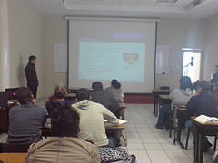

GULAG
Grupo de Usuarios de GNU/Linux de la Laguna.
Entradas
FLISOL 2009
El sábado 25 de abril en la Universidad Autónoma de Coahuila (UAC) se llevó a cabo el Festival Latinoamericano de Instalación de Software Libre 2009 (FLISOL) organizado por tercer año consecutivo por el Grupo de Usuarios de GNU/Linux de La Laguna (GULAG).
Conferencias

Con la presencia de más de 100 personas el evento inició con tres conferencias.

La primera fue Gnome e introducción a los programas básicos por Oscar Barajas (GnDx) que trató de la historia, personajes y demostración de este entorno gráfico.

La segunda exposición fue KDE 4 – Reinventando el entorno gráfico por Guillermo Valdés (guivaloz) donde se mostró la nueva versión del KDE, la 4.2, además de su historia, componentes y filosofía. La última exposición fue Streaming de audio (GNU/mp3d) por Ernesto Cobos (dnex) quien nos explicó cómo montar un servidor de música para compartirla en la red.
Taller de instalación
Después de las conferencias, se inició el taller de instalación, donde los equipos de cómputo que los asistentes llevaron fueron reinstalados con Software Libre. Más de 20 computadoras, mayoritariamente portátiles, se llevaron Kubuntu, Ubuntu, PC-BSD y Debian. Además, como ya es tradición, se degustó de una deliciosa discada, galletas y refrescos.
GULAG, agradece a..
- Universidad Autónoma de Coahuila (UAC) por abrirnos sus puertas siendo sede del evento.
- Universidad Autónoma de La Laguna
- Universidad Tecnológica de Torreón
- NIIT
- KDE México por patrocinar este evento.
- A todos los miembros del GULAG quienes no se dejaron vencer en ninguna instalación.
- Y a todos los asistentes que libremente nos visitaron.
¡Gracias a todos por el éxito del evento! ¡Los esperamos el próximo año, para el FLISOL 2010!


InnovaTIC 1er Aniversario
InnovaTIC es un grupo de personas interesadas en la Innovación Colaborativa en el tema de TIC’s, donde el GULAG está representado con Guillermo Valdés (guivaloz), el cual está cumpliendo un año de haberse integrado como una RED de Trabajo.
En este primer año se ha conseguido integrar un grupo sólido y enfocado en desarrollo de proyectos. Debido a ello es que ya se cuenta con varios de ellos que han puesto en evidencia la capacidad de trabajar con excelente voluntad por el bien del grupo.
Para celebrarlo se ha organizado, a manera de fiesta de aniversario, tres conferencias a desarrollarse entre las 9:00 y las 13:30 horas el día 6 de marzo de 2009. La sede son las instalaciones del Tec de Monterrey, Campus Laguna.
Para saber más de lo que es InnovaTIC, escuche esta entrevista (audio OGG, 18 minutos, 10.2 MB) a Miguel Ángel de la Rosa y Luis Rayas Velasco.
Actualización:
Luis Rayas Velasco y Guillermo Valdés (guivaloz) fueron invitados al programa Contextos de GREM. Hablamos sobre la Red InnovaTIC, el GULAG y el Software Libre. Pueden descargar esta entrevista (audio OGG, 23 min, 7.1 MB).
"Seguridad Informática" en la UANE
 
El pasado 5 de febrero en las instalaciones de la Universidad Autónoma del Noreste Antonio Martínez (toNo) impartío una plática sobre “Seguridad Informática” apoyado por Oscar Barajas (GnDx) en donde se habló de los diferentes tipos de seguridad, física y lógica; también habló sobre los diferentes tipos de amenazas humanas (crackers, phreakers, etc…) y amenazas lógicas (sniffing, smurf, spoofing, DoS, exploits, etc.).
Al final se hizo una demostración sobre la técnica “sniffing” y “scanning”.
Descargas
"Software Libre" en el 35 Aniversario del CBTiS 4


El 28 de octubre del presente, Guillermo Valdés participó con la ponencia Software Libre en los eventos del XXXVII Aniversario del Centro de Bachillerato Tecnológico Industrial y de Servicios No. 4.
Al finalizar, se proyectó el mensaje de Richard Stallman, a cerca de por qué debe usarse software libre en las instituciones educativas
No cabe duda que estamos en un tiempo donde más gente que antes ha escuchado hablar sobre Software Libre, y espero que una gran parte de ellos estén por ser usuarios del mismo. Agradecemos grandemente el entusiasmo que manifestaron los asistentes a la plática, así como las amables atenciones de los maestros y directivos del plantel. Les felicitamos por abrir sus puertas al Software Libre.
"Demostración de Programas Multimedia" en el SINASCI 2008

{kind=link}
{kind=link}
{kind=link}
{kind=link}
{kind=link}
El Instituto Tecnológico Superior de Lerdo invitó a César Espino y a Guillermo Valdés a participar en el VI Simposium Nacional de Sistemas Computacionales e Informática con la ponencia Demostración de programas de aplicación multimedia.
El evento comenzó con Guillermo explicando los tipos de archivos de audio y video, la patente del formato MP3 y las aplicaciones LAME, Audacity, FFMPEG, MPlayer, Xine y VLC. Se mostró la visualización de la TV en una computadora Pentium 4, con 512 MB de RAM y una tarjeta Pinnacle i110 para demostrar la versatilidad de GNU/Linux y de que no se necesitan equipos de punta para lograr excelentes resultados en multimedia.


César Espino mostró los programas GIMP, Inkscape y Blender. De este último programa, proyectó parte del cortometraje Big Buck Bunny con el que cautivó a los asistentes.
Nuestro agradecimiento y felicitaciones al Instituto Tecnológico Superior de Lerdo por difundir el Software Libre en la Comarca Lagunera.
Descargas
CONADI 2008 del Instituto Tecnológico Superior de Tamazunchale


Los días 20, 21 y 22 de octubre del presente, Antonio Gurza, Oscar Barajas y Antonio Martínez impartieron un taller y una conferencia en el CONADI 2008 del Instituto Tecnológico Superior de Tamazunchale, San Luís Potosí.


El taller tuvo una duración de 12 hrs. en las cuales, cada uno impartió los siguientes temas: Antonio Gurza: “Comandos Básicos”, “Servidor de FTP y SSH”. Oscar Barajas: “Entorno de escritorio GNOME” y “Servidor de Correo Electrónico”. Antonio Martínez: “Introducción a Debian GNU/Linux” e “Instalación de Debian GNU/Linux, servidor web y base de datos”. Hubo un total de 120 alumnos registrados.


El día 22 de octubre, Antonio Martínez participó con la conferencia “¿Qué se puede hacer con el Software Libre?”, en la que se mencionaron los tipos de software que existen, la historia de GNU/Linux, los entornos de escritorio, distribuciones, ejercicios en LaTeX y una demostración de la compatibilidad de Mono con MS Visual Studio.
Descargas
"Software Libre" en la XV Semana de Ciencia y Tecnología


El pasado 21 de octubre de 2008, Guillermo Valdés impartió la plática Introducción al Software Libre ante alumnos de 5to. y 6to. de primaria. Los niños de esta generación muestran un mayor uso de las herramientas informáticas que las generaciones pasadas; sin embargo, para ellos fue la primera vez que escucharon hablar sobre Linux y Software Libre.
Guillermo, les explicó las cualidades del Software Libre, su filosofía y la gran fuente de conocimiento y aprendizaje que representa. Para entender la importancia del conocimiento libre_, se hicieron comparaciones simples, como el qué hubiera sido de los descubrimientos de Issac Newton si los hubiese patentado o si hubiera cobrado por hacer copias impresas de sus famosas leyes de la dinámicaNewton.
Para este público tan especial fueron muy valiosas las animaciones de Guadalinex que con sus cortos animados nos ayudan a fácilmente entender la misión del Software Libre. Además cada alumno se llevó una copia de Ubuntu y la mayoría el add-on para volverlo Edubuntu.
Agradecemos al Consejo Estatal de Ciencia y Tecnología su amable invitación a este evento educativo.
"Taller de creación de multimedia con S.L." en el Tec de Lerdo


César Espino con el apoyo de Guillermo Valdés dieron en el Tec de Lerdo un taller de creación de multimedia con software libre.
Fueron 27 muchachos a los que se les mostró y pusieron en práctica como editar/crear imágenes con Gimp e Inkscape, editar audio con Audacity y manejar video con MPlayer. Los alumnos del tec de Lerdo se mostraron muy interesados en los programas que le fueron mostrados.